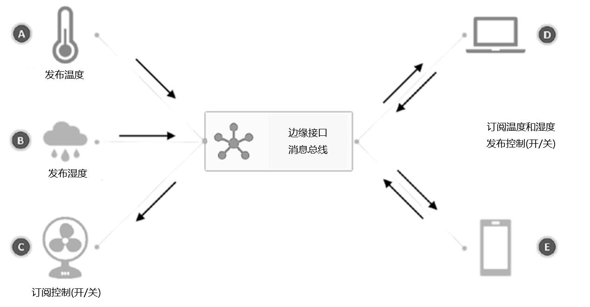
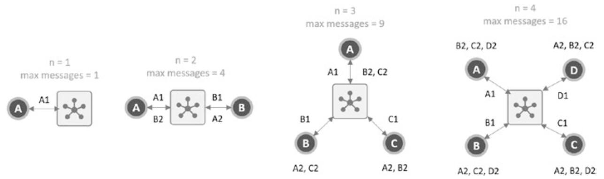

MQTT消息代理
什么是MQTT
MQTT是一个客户端-服务器的发布/订阅消息传输协议。它是轻量级的、开放的、简单的，并且易于实现。 这些特性使其非常适合在许多情况下使用，包括受限的环境，例如在机器-机器(M2M)和物联网(IoT)环境中进行通信，在这些情况下需要较小的代码占用空间和/或网络带宽非常昂贵。
MQTT是一种非常轻量级的二进制类型协议，由于包开销最小，因此很容易在受限的设备上实现。这使得它成为物联网设备的理想选择。
发布和订阅模式
与使用客户端-服务器架构的HTTP交互一样，MQTT也使用发布/订阅架构。作为一个固有需求，它需要在两者之间有一个消息代理。这实质上使一个发布者（或发送客户端）与订阅者（或接收客户端）分离。而且，这也意味着我们可以有多个订阅者订阅同一条已发布的消息。
让我们了解发布和订阅范例如何简单的工作，如下图所示。有5个客户端（物联网设备）通过互联网连接到消息代理。每个客户扮演不同的角色。

发布订阅模式
客户端A和B分别是发送温度和湿度的传感器设备
客户端C是一个连接的风扇
客户端D是一台笔记本电脑
客户端E是一个移动应用程序
由于客户端C、D和E需要根据A和B发布的信息采取行动，因此他们是温度和湿度信息（主题）的订阅用户。传感器客户端A和B定期在各自的通道（主题）上传输温度和湿度数据（有效载荷）。消息代理负责跟踪连接的客户端以及订阅的主题。
当客户端A和B发布信息时，客户端C、D和E接收信息。
发布/订阅模式的优点是，即使其中一个客户端停机，它也不会破坏系统整体可用性。代理有助于在不同级别上分离客户端，以便它们没必要同时保持与代理的连接。
发布/订阅机制还允许我们启用更好的消息路由和基于事件的操作。这对我们的物联网平台很重要，因为它改善了整体架构并保持了其各模块整洁和解耦。架构的可伸缩性是我们在平台上使用MQTT和发布/订阅的另一个方面。
作为一个独立的客户端，系统中的每个节点都可以将其信息贡献给一个更大的生态系统。这意味着，我们可以根据客户A和B的读数以及图外其他温度传感器的读数（例如天气预报或环境监测系统）使风扇C工作。
MQTT及消息代理的其他特性
通常，客户端(client)指的是连接到MQTT消息代理或通过MQTT消息代理通信的所有内容。因此，客户端可以是信息的发布者、信息的订阅者，或者两者兼而有之。由于MQTT是一个基于TCP/IP的协议，所以任何可以说TCP/IP的设备都应该能够建立MQTT连接并成为客户端。
我们可以让传感器和控制系统设备充当客户端；同样，我们也可以让其他计算机、移动电话或web应用程序充当客户端和/或传感器。所有这些以一种有意义的方式组合在一起，最终形成一个有效的解决方案。
另一方面，代理是此通信的协调器或编排器。代理的工作是接收来自所有客户端的所有消息，过滤它们，查找哪个客户端订阅了哪个主题，然后将消息重新分发给这些客户端。代理还负责维护各种连接参数，例如客户端会话详细信息、证书、存储消息的数据库，以及其他一些组件。
由于代理在发布/订阅通信系统中扮演着如此重要和关键的角色，因此期望它具有高可用性、容错性、易于部署、监视和维护以及易于与完整解决方案的其他几个方面集成。我们选择的消息代理系统-Mosquitto，实现了所有这些标准。
服务质量(Quality of Service)
发布/订阅机制有一个有趣的概念，称为QoS或服务质量。服务质量是MQTT通信的关键和非常有用的特性之一。尽管MQTT协议本质上是轻量级和非冗余的，但它允许客户端在很长一段时间内与代理保持一致的连接，并确保发布或订阅的所有消息都在一定程度上得到保证。保证MQTT消息以QoS的形式维护。
QoS是消息的发送者和接收者之间的协议。必须指出，就发布/订阅机制而言，至少有两个发件人和两个收件人。这是因为每个消息都通过代理。因此，对于任何发送的消息，代理是第一个接收者，然后是后续接收者，反之亦然。因此，MQTT上下文中的QoS在这两个级别上工作。
MQTT支持三种QoS级别：
QoS 0：最多一次，消息可能会丢失
QoS 1：至少一次，即可能重复
QoS 2：恰好一次
有时订阅者的QoS级别与发布者的QoS级别不同。也就是说，发布者发送消息的目的是精确地发送消息一次(QoS 2)；但是，如果订阅者对该确定级别不感兴趣，则可以在QoS 0下订阅该消息。因此，当代理尝试将此消息传递给订阅者时，将根据订阅者的请求降级QoS。相反，如果订阅者请求的服务级别高于发布者，则它也会升级到订阅者的请求。
QoS机制有助于选择适当的通信服务级别，以匹配客户端的操作环境。例如，如果客户端处于移动车辆中的3G上的高度不可靠的通信环境连接中，则这些客户端可以选择更高的QoS以确保他们接收到通信。在可靠通信区域工作的客户端（例如在具有Wi-Fi连接的家庭中）可以选择较低的QoS级别，因为连接预期是可靠的。
通常，当连接可靠或者一条消息或多条消息的丢失不会引起任何问题时应选择QoS 0。 QoS 1通常是最佳选择，因为消息至少收到一次，并且如果收到重复消息，则可以在应用程序层进行处理。如果每个消息都是关键消息，并且不能被跳过或错过，则强烈建议使用QoS 2。我们需要清楚，我们可以实现应用程序级逻辑来维护和升级通信的可靠性，而无需借助协议。但是，在协议层具有协议支持是一个附加的优势。
心跳间隔(Keep Alive Period)
MQTT协议是全双工的，并且具有实时通信的特性，这意味着通信双方必须处于实时连接状态。在发布/订阅机制中，代理和客户端应该连接起来，并且在通信时处于活动状态。如果链路由于任何原因（不可靠的网络等）而中断，那么各方都应该知道发生了这种情况，然后采取相应措施。
MQTT所基于的基本TCP协议在实践中不一定以这种方式工作（理论上必须如此），这意味着当连接断开时，双方中的一方可能不知道连接断开。这种情况称为半开放连接。为了应对这种情况，引入了keep alive。
Keep Alive Period是客户端完成发送一个控制包的时间点与开始发送下一个控制包的时间点之间允许经过的最大时间间隔。客户端有责任确保发送的控制数据包之间的间隔不超过保持有效值。在没有发送任何其他控制数据包的情况下，客户端必须发送PINGREQ数据包。
简言之，如果客户端和代理之间的某些数据流发生的时间少于keep alive间隔指定的时间段，则连接将保持活动状态并可验证为已满。如果没有数据流，那么客户端发送一个两字节的传输（以PINGREQ包的形式）让代理知道。如果客户端在该时间间隔内没有发送keep-alive包或任何数据，则代理将关闭连接并发布最后一条will消息，这是客户端在连接期间设置的。
存活的最大间隔为18小时12分15秒，即65535秒。如果将keep alive interval设置为0，则此机制将被停用。
最后遗嘱(Last Will and Testament)
如前所述，当客户端没有向代理发送保持活动的数据包或任何数据时，连接将关闭，代理将向所有订户发布称为“最后遗嘱”（LWT）的特殊消息。这样一来，如果客户端的连接断开，所有其他订阅者和应用程序都可以采取有意义的方式进行操作。
请注意，“正常断开连接”是指通过适当的协议握手故意断开任何设备或客户端与消息代理的连接。如果没有发生这种情况（即，断开连接是由外部因素造成的，例如网络异常），那么代理将立即向所有订阅者发布LWT消息。
每当客户端建立新连接时，用于连接的参数之一就是“last-will-message”。就像客户端发出的任何其他消息一样，这是一条客户端消息，但要注意的是，除非客户端不正常断开连接，否则不会发布该消息。 LWT是通知所有其他订阅者断开连接并使其采取相应行动的最佳方法。
保留消息(The Retained Message)
保留消息与客户端发布的任何其他消息一样。如果保留标志设置为1或true，则表示代理保留消息的副本，直到将其删除或替换。每当任何订阅者订阅与保留消息的主题匹配的主题或模式时，就会立即传递消息。
必须注意的是，每个主题仅保留一条消息，这是一种有趣的方法，可以使每台设备和应用程序保持最新状态。上图中显示了我们如何建立这样的机制。
客户端A（温度传感器）在连接时第一次连接到代理。它将LWT消息设置为”offline”，主题为”temp-sensor/status”，其中保留标志设置为true。它告诉代理存储此消息，直到客户端覆盖或删除该消息为止，并且仅在温度传感器随机断开连接时才发布消息。建立连接后，传感器会立即在与”tempsensor/status”相同的主题上以”online”发布另一条消息，并且将保留标志设置为true。
现在，任何订阅”temp-sensor/status”主题的新客户端都将始终收到”online”响应。但是，如果温度传感器断开连接，则代理发布其LWT消息，并且所有订阅者都会立即收到脱机消息。这样可以使其他所有客户端保持温度传感器在线状态的最新信息。或者，如果传感器要主动断开连接，则它可以首先在与断开连接相同的主题上发布一条消息，向所有客户端表明传感器已与代理断开连接。
带有LWT的保留消息是建立一种始终保持每个客户端状态更新机制的有效方法。
要从代理的存储中删除保留的消息，只需在同一主题上发布一条空消息。例如，如果”tempsensor/status”发布一个空（0字节）字符串，并将retained标志设置为true，则现有的消息值将被覆盖，并且不会基于新的保留标记被保留。
WebSocket
我们已经从通信的角度了解了MQTT在物联网中的重要性。因此，我们自然希望能够在使用该平台的基于浏览器的应用程序中使用此功能。WebSocket启用了基于浏览器的应用程序的所有MQTT功能，然后可以在许多有趣且有用的案例中使用。
浏览器并不直接与TCP通信，因此也不能与MQTT通信。我们需要利用浏览器的现有功能来与WebSocket协议对话。WebSocket是一种网络协议，它提供浏览器和web服务器之间的双向通信。这个协议在2011年被标准化，几乎所有的现代浏览器都提供了对它的内置支持。好在WebSocket协议是基于TCP的，与MQTT相同，这就是为什么它更容易实现的原因。
现代浏览器和HTML5引入了许多新功能，使我们能够建立像桌面和移动应用一样的网站。Progressive web apps（PWAs）就是一个典型的例子。浏览器几乎无处不在地安装在每一台设备上，如台式电脑、笔记本电脑或智能手机。
对于与异构设备和系统的所有通信，我们可以通过使用公共协议来实现一致性，这是在WebSocket上使用MQTT的最诱人的原因。将MQTT与WebSocket结合使用还使我们的应用程序能够通过实时双向通道进行通信。从实时多方聊天到对系统的实时监控，机会是无穷的。在后面，一旦大多数平台功能都构建并准备就绪，我们将在WebSocket上启用和实现MQTT。
MQTT是最佳选择吗
还有几种技术可用于开发具有全双工功能和各种支持功能的消息代理。包括使用原始TCP套接字、原始UDP套接字、AMQP和CoAP。这些替代方案中的大多数具有更多的局限性和复杂性，而不是益处，特别是与MQTT相比。在物联网平台建设中，MQTT应该最合适，高效和便捷的选择。
所有这些协议都可以共存，并且如有必要，我们可以部署在同一实例上。这意味着将来如果你决定使用AMQP和MQTT，则可以集成其中的一部分或全部。更重要的是，我们可以将这些通道与其他插件程序组合在一起，以便从应用程序和设备的角度进行无缝通信。这超出了本次实现范围，但肯定是可能的。在后续物联网平台JAVA版本系列中会涉及多协议支持的设计和实现。
何时使用MQTT，何时不使用
从根本上说，MQTT是一种异步协议，因此可以实现双工通信，同时减轻系统的负载。它允许系统在低带宽和低功耗下运行。相反，HTTP和类似的协议需要相对较高的带宽和功率，本质上是请求/响应，这意味着客户端必须始终启动通信。
在你希望任何一方（服务器或客户端）发起通信的地方，MQTT是最佳选择。此外，如果系统需要长时间以低功耗（尤其是电池）运行，则应谨慎使用MQTT。如果设备需要频繁且随机地发送或接收数据，那么MQTT也很有意义，因为它减少了大量HTTP开销。
如果不考虑带宽和功率，那么HTTP可能是一个更好的选择。此外，当数据发送或接收频率不高时，这会在处理过程中更快地阻塞资源。
在需要实时控制或监视的应用程序中，MQTT是一个很好的选择，因为它以最少的开销提供双工和双向通信能力。
基于MQTT的系统的工作负载可以呈抛物线增长，这意味着对于添加到MQTT网络的每个设备（总共有n个设备），系统上的负载变为n的平方（n * n）。下图以图形方式解释了这个概念。

MQTT负载
例如，假设有一个极端的情况，即有两个客户端都订阅了所有可能的主题（通配符＃）。当客户端发布消息时，代理需要接收消息，而另一个客户端也需要接收消息。这意味着发送一条消息可能导致两次传输。其他客户端也一样，对于两个客户端系统，总共四个消息。对于三客户端系统，此数目总共变为九条消息（即每个客户端三条消息）。仅连接100个设备就意味着消息代理应该能够处理100 * 100（即10000条消息，依此类推）。
这意味着，当客户端数量开始增长时，消息代理和整个系统/平台上的负载将几乎呈指数级增长；在后期扩展物联网平台时，我们需要记住这一点。